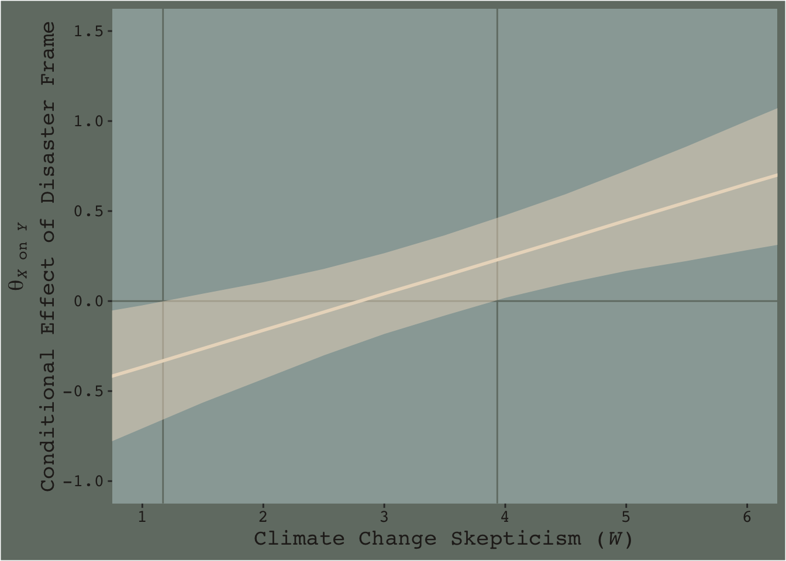

7.4 Probing an interaction
7.4.1 The pick-a-point approach.
7.4.1.1 The pick-a-point approach implimented by regression centering working directly with the posterior.
Yes, if you wanted to use the regression centering approach, you could do that in brms. Just center the necessary variables in the way Hayes described in the text, refit the model, and summarize(). I suspect this would be particularly approachable for someone new to R and to the ins and outs of data wrangling. But I’m going leave that as an exercise for the interested reader.
Now that we’ve already got a posterior for our model, we can just either algebraically manipulate the vectors yielded by posterior_samples() or push predictions through fitted(). To give a sense, we’ll start off with the 16th percentile for skeptic. Recall we can get that with the quantile() function.
quantile(disaster$skeptic, probs = .16)## 16%
## 1.6Now we just need to feed that value and different values of frame into the posterior samples of the model coefficients. We then create a difference score for the model-implied estimates given frame is either 0 or 1 and then plot that difference.
post %>%
mutate(Y_given_frame_0_skeptic_1.6 = b_Intercept + b_frame*0 + b_skeptic*1.6 + `b_frame:skeptic`*0*1.6,
Y_given_frame_1_skeptic_1.6 = b_Intercept + b_frame*1 + b_skeptic*1.6 + `b_frame:skeptic`*1*1.6) %>%
mutate(difference = Y_given_frame_1_skeptic_1.6 - Y_given_frame_0_skeptic_1.6) %>%
ggplot(aes(x = difference)) +
geom_density(color = "transparent",
fill = dutchmasters$little_street[9]) +
geom_vline(xintercept = 0, color = dutchmasters$little_street[7], linetype = 2) +
scale_y_continuous(NULL, breaks = NULL) +
labs(subtitle = "The effect of frame on justify\ngiven skeptic = 1.6",
x = NULL) +
theme_07Note how nicely that distribution corresponds to the output in the lower left corner of Hayes’s Figure 7.8. If we wanted the values for other values of skeptic (e.g., 2.8 and 5.2 as in the text), we’d just rinse, wash, and repeat. A nice quality of this method is it requires you to work explicitly with the model formula. But it’s also clunky if you want to do this over many values. The fitted() function offers an alternative.
Recall how the default fitted() settings are to return summaries of a model’s \(Y\)-variable given values of the predictor variables. In the previous section we put our prefered frame and skeptic values into a data object named nd and used the newdata argument to push those values through fitted(). Buy default, this yielded the typical posterior means, \(SD\)s, and 95% intervals for the predictions. However, if one sets summary = F, the output will differ. First. Let’s revisit what nd looks like.
(
nd <-
tibble(frame = rep(0:1, times = 3),
skeptic = rep(quantile(disaster$skeptic,
probs = c(.16, .5, .84)),
each = 2)) %>%
# This will make our lives easier in just a bit
arrange(frame)
)## # A tibble: 6 x 2
## frame skeptic
## <int> <dbl>
## 1 0 1.6
## 2 0 2.8
## 3 0 5.2
## 4 1 1.6
## 5 1 2.8
## 6 1 5.2Here’s what happens when we use summary = F.
f_model3 <-
fitted(model3, newdata = nd, summary = F)
f_model3 %>% str()## num [1:4000, 1:6] 2.63 2.74 2.75 2.75 2.49 ...f_model3 %>% head()## [,1] [,2] [,3] [,4] [,5] [,6]
## [1,] 2.633868 2.755445 2.998599 2.402675 2.733944 3.396481
## [2,] 2.736530 2.798106 2.921260 2.332534 2.750577 3.586663
## [3,] 2.753872 2.818162 2.946742 2.288811 2.716716 3.572527
## [4,] 2.745839 2.836755 3.018588 2.318846 2.668332 3.367305
## [5,] 2.493795 2.651769 2.967716 2.421827 2.791521 3.530908
## [6,] 2.522040 2.637816 2.869368 2.381670 2.768278 3.541495With summary = F, fitted() returned a matrix of 4000 rows (i.e., one for each posterior iteration) and 6 vectors (i.e., one for each row in our nd data). So now instead of summary information, we have a full expression of the uncertainty in terms of 4000 draws. If you prefer working within the tidyverse and plotting with ggplot2, matrices aren’t the most useful data type. Let’s wrangle a bit.
f_model3 <-
f_model3 %>%
as_tibble() %>%
gather() %>%
select(-key) %>%
# We multiply 4000 (i.e., the # of iterations) by 3 because there are 3 distinct `skeptic` values
mutate(frame = rep(0:1, each = 4000*3),
# Note how we have `rep()` nested within `rep()`.
skeptic = rep(rep(quantile(disaster$skeptic, probs = c(.16, .5, .84)),
each = 4000),
# We repeate the first `rep()` output 2 times because ther are 2 values of `frame` we'd like them for
times = 2),
# We need an iteration index, `iter`, in order to help with `spread()`, below.
iter = rep(1:4000, times = 6)) %>%
spread(key = frame, value = value) %>%
mutate(difference = `1` - `0`,
# This isnt' necessary, but will help with the facet labels
skeptic = str_c("skeptic = ", skeptic))
f_model3 %>% head()## # A tibble: 6 x 5
## skeptic iter `0` `1` difference
## <chr> <int> <dbl> <dbl> <dbl>
## 1 skeptic = 1.6 1 2.63 2.40 -0.231
## 2 skeptic = 1.6 2 2.74 2.33 -0.404
## 3 skeptic = 1.6 3 2.75 2.29 -0.465
## 4 skeptic = 1.6 4 2.75 2.32 -0.427
## 5 skeptic = 1.6 5 2.49 2.42 -0.0720
## 6 skeptic = 1.6 6 2.52 2.38 -0.140And here’s a plot of what we’ve done.
f_model3 %>%
ggplot(aes(x = difference)) +
geom_density(color = "transparent",
fill = dutchmasters$little_street[9]) +
geom_vline(xintercept = 0, color = dutchmasters$little_street[7], linetype = 2) +
scale_y_continuous(NULL, breaks = NULL) +
labs(subtitle = "The effect of frame on justify given three different values of skeptic",
x = NULL) +
theme_07 +
facet_wrap(~skeptic)
And if you prefered summary information instead of plots, you’d use summarize() as usual.
f_model3 %>%
group_by(skeptic) %>%
summarize(median = median(difference),
ll = quantile(difference, probs = .025),
ul = quantile(difference, probs = .975)) %>%
mutate_if(is.double, round, digits = 3)## # A tibble: 3 x 4
## skeptic median ll ul
## <chr> <dbl> <dbl> <dbl>
## 1 skeptic = 1.6 -0.243 -0.537 0.052
## 2 skeptic = 2.8 -0.001 -0.23 0.23
## 3 skeptic = 5.2 0.488 0.191 0.7797.4.2 The Johnson-Neyman technique.
The JN technique generalizes this approach over many values of \(W\) (i.e., skeptic in this example) in order to get a sense of the trend and summarize regions of the trend in terms of \(p\)-value thresholds. Since we’re emphasizing modeling and deemphasizing null-hypothesis testing in this project, I’ll show a Bayesian version of the approach without the \(p\)-values.
7.4.2.1 Implementation in PROCESS brms.
Since Figure 7.9 had skeptic values ranging from 1 to 6 with ticks on the 0.5s, we’ll use a similar approach for our version. We’ll estimate posterior samples with fitted() for skeptic values ranging from .5 to 6.5, one for each 0.5—13 in total. But since we have two levels of frame (i.e., 0 and 1), that really gives us 26. And we don’t just want 26 summaries; we want full posterior distributions for each of those 26.
We’ve got a lot of moving parts in the code, below. To help make sure everything adds up, we’ll save several important values as R objects.
iter <- 4000 # this number comes from the total number of post-warmup posterior iterations from the `brm()` function
n_frame_values <- 2 # there are 2 levels of `frame`, 0 and 1
n_skeptic_values <- 13 # we're choosing 13 in this example to follow some of the sensibilities in Figure 7.9. You'll see.
# as before, we'll make `nd` to feed in to `fitted()`
nd <-
tibble(frame = rep(0:1, each = n_skeptic_values),
skeptic = rep(seq(from = .5, to = 6.5, length.out = n_skeptic_values),
times = n_frame_values))
# after the initial `fitted()` action, we need a few steps to wrangle the data into a useful format
f_model3 <-
fitted(model3, newdata = nd, summary = F) %>%
as_tibble() %>%
gather() %>%
mutate(frame = rep(0:1, each = iter*n_skeptic_values),
skeptic = rep(rep(seq(from = .5, to = 6.5, length.out = n_skeptic_values),
each = iter),
times = n_frame_values)) %>%
select(-key) %>%
rename(estimate = value) %>%
mutate(iter = rep(1:iter, times = n_frame_values*n_skeptic_values)) %>%
spread(key = frame, value = estimate) %>%
mutate(difference = `1` - `0`)
# finally, here's the plot
f_model3 %>%
ggplot(aes(x = skeptic %>% as.character, y = difference)) +
geom_hline(yintercept = 0, color = dutchmasters$little_street[7]) +
geom_violin(size = 0, fill = dutchmasters$little_street[6]) +
stat_summary(fun.y = median,
fun.ymin = function(x){quantile(x, probs = .025)},
fun.ymax = function(x){quantile(x, probs = .975)},
color = dutchmasters$little_street[5]) +
labs(x = expression(paste("Climate Change Skepticism (", italic(W), ")")),
y = expression(atop(theta[paste(italic(X), " on ", italic(Y))], paste("Conditional Effect of Disaster Frame")))) +
theme_07
[Note. I got the atop() trick for the label for the y-axis from Drew Steen’s answer to this stackoverflow question.]
This isn’t quite our version of Figure 7.9, but I’m hoping it’ll add some pedagogical value for what we’re doing. Since we used summary = F in fitted(), we got full posterior distributions for each of our 26 conditions. Because Figure 7.9 is all about differences between each frame pair across the various values of skeptic, we needed to make a difference score for each pair; this is what we did with the last mutate() line before the plot code. This initial version of the plot shows the full posterior distribution for each difference score. The posteriors are depicted with violin plots, which are density plots set on their side and symmetrically reflected as if by a mirror to give a pleasing leaf- or violin-like shape (though beware). The light dots and vertical lines are the posterior medians and 95% intervals for each.
Going from left to right, it appears we have a clearly emerging trend. We can more simply express the trend by summarizing each posterior with medians and 95% intervals.
f_model3 %>%
group_by(skeptic) %>%
summarize(median = median(difference),
ll = quantile(difference, probs = .025),
ul = quantile(difference, probs = .975)) %>%
ggplot(aes(x = skeptic)) +
geom_hline(yintercept = 0, color = dutchmasters$little_street[7]) +
geom_vline(xintercept = c(1.171, 3.934), color = dutchmasters$little_street[7]) +
geom_ribbon(aes(ymin = ll, ymax = ul),
fill = dutchmasters$little_street[5],
alpha = 1/2) +
geom_line(aes(y = median),
color = dutchmasters$little_street[5], size = 1) +
scale_x_continuous(breaks = 1:6) +
coord_cartesian(xlim = c(1, 6),
ylim = c(-1, 1.5)) +
labs(x = expression(paste("Climate Change Skepticism (", italic(W), ")")),
y = expression(atop(theta[paste(italic(X), " on ", italic(Y))], paste("Conditional Effect of Disaster Frame")))) +
theme_07
Notice how the contour boundaries of the 95% intervals are a little clunky. That’s because our bowtie-shape is based on only 13 x-axis values. If you wanted a smoother shape, you’d specify more skeptic values in the data object you feed into fitted()’s newdata argument. For linear effects, 30 or so usually does it.
Anyway, I got the values for the two vertical lines directly out of the text. It’s not clear to me how one might elegantly determine those values within the paradigm we’ve been using. But that leads to an important digression. The two vertical lines are quite \(p\)-value centric. They are an attempt to separate the x-axis into areas where the difference trend either is or is not statistically-significantly different from zero. That is, we’re dichotomizing—or “trichotomizing”, depending on how you look at it—a continuous phenomenon. This is somewhat at odds with the sensibilities of the Bayesians associated with Stan and brms (e.g., here).
On page 259, Hayes wrote:
Although the JN technique eliminates the need to select arbitrary values of \(W\) when probing an interaction, it does not eliminate your need to keep your brain turned into the task and thinking critically about the answer the method gives you.
I think this is valuable advice, particularly when working within the Bayesian paradigm. Our version of Figure 7.9 gives some interesting insights into the moderation model, model3. I’m just not so sure I’d want to encourage people to interpret a continuous phenomenon by heuristically dividing it into discrete regions.